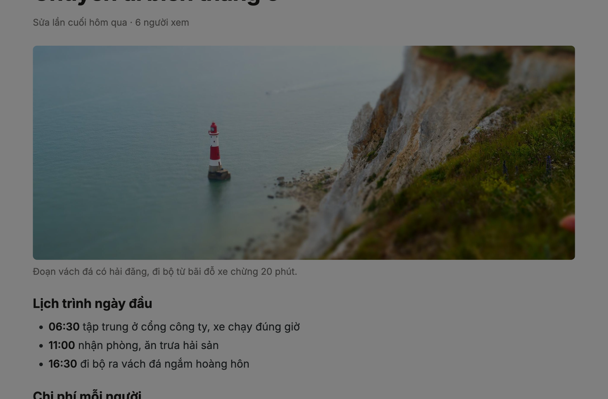
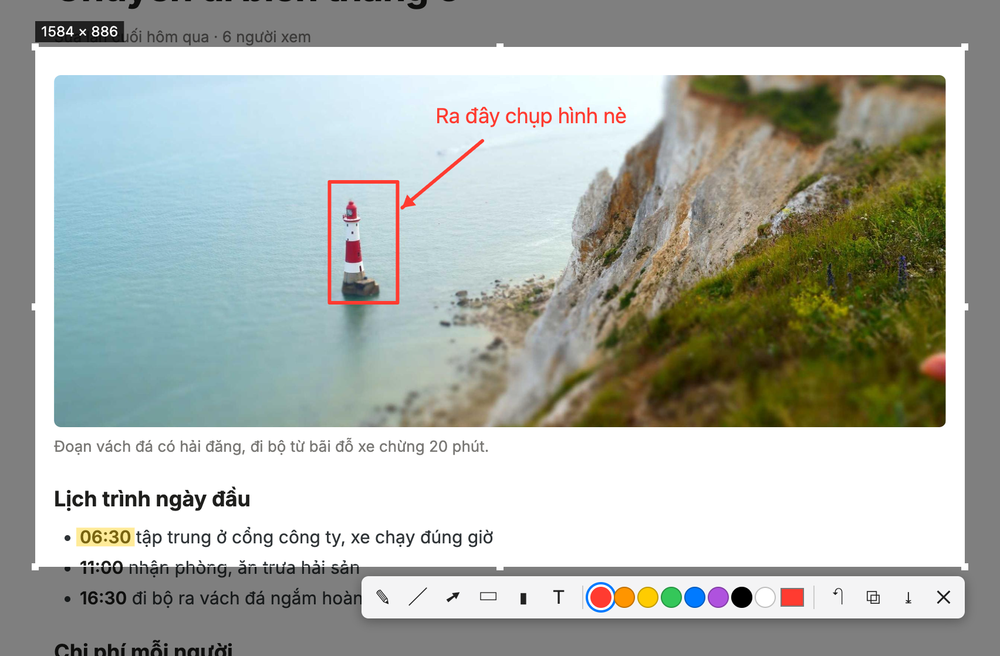
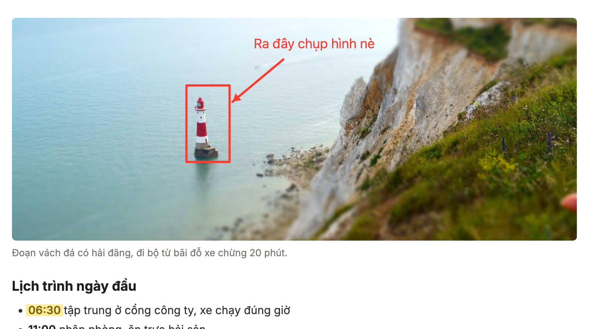
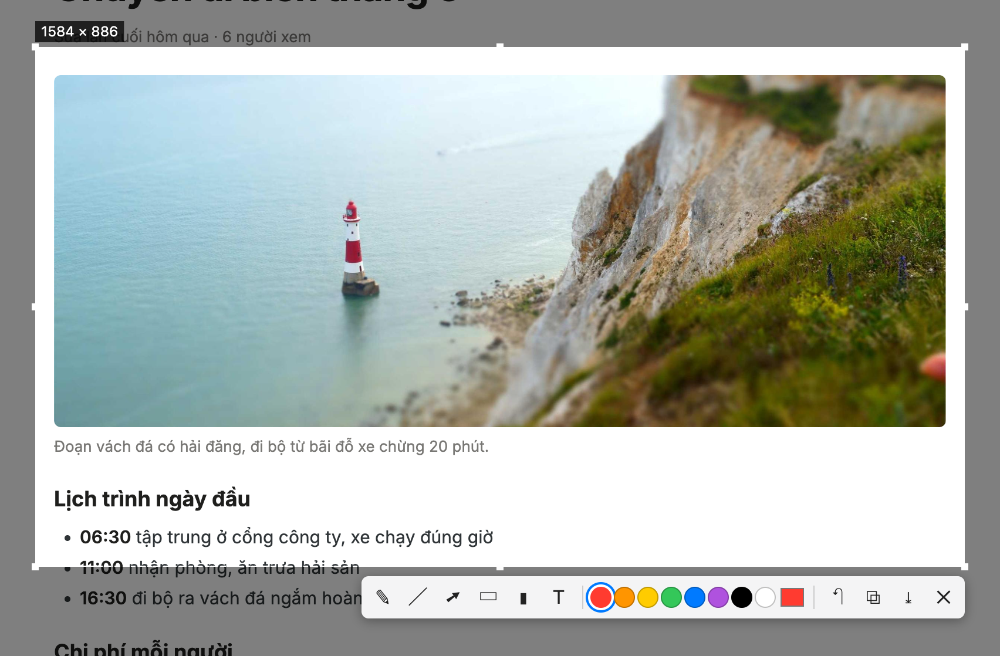
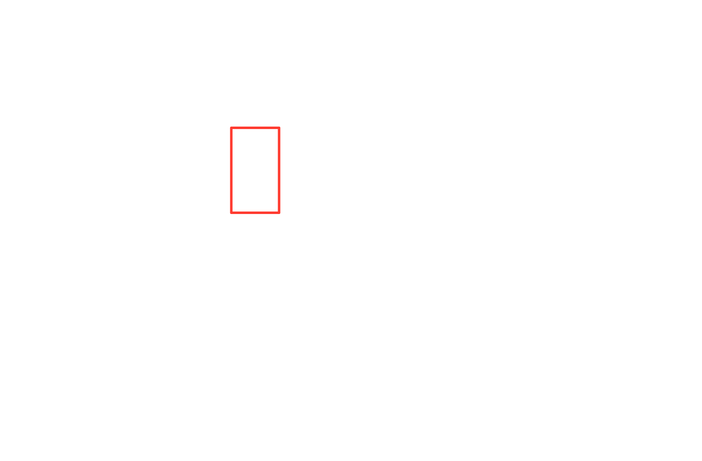
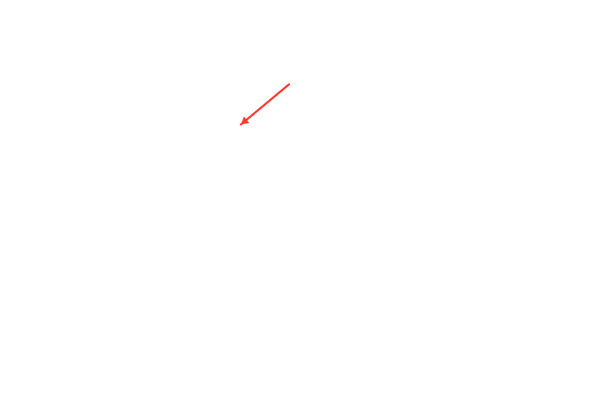
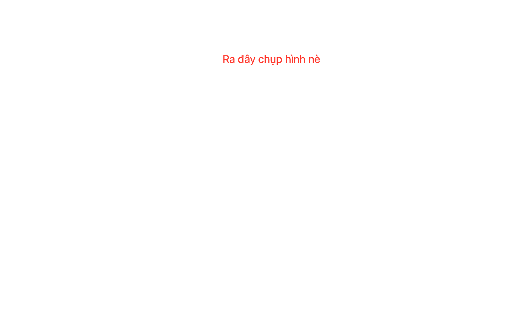

Chụp, khoanh, dán vào chat.
Snapit là tool chụp màn hình kiểu Lightshot cho Mac và Linux. Bấm một phím, màn hình đứng lại cho bạn khoanh vùng, vẽ vài nét, rồi ⌘C.
Miễn phí. macOS 13 trở lên, Ubuntu và Linux khác.
Dùng thế nào
-
Đầu tiên, bấm ⌘⇧2.
⌘⇧2 Trên Linux là PrintScreen.
Màn hình đứng lại và tối đi, chờ bạn kéo. -
Rồi kéo một vùng, vẽ lên đó.

Thanh công cụ nằm ngay dưới vùng chọn. Kéo cạnh để chỉnh lại, ⌘Z nếu lỡ tay. -
Xong thì ⌘C, dán vào đâu cũng được.
⌘C copy ⌘S lưu file
Đây là ảnh thật Snapit xuất ra: 1584 × 886 pixel, nét đúng như màn hình Retina.
Bật tắt thử
Mỗi nét dưới đây do chính code vẽ của Snapit tạo ra. Tắt bớt xem bức ảnh gọn đi thế nào.




Tên file theo giờ máy bạn, đúng như Snapit sẽ đặt.